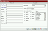
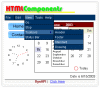
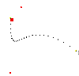

- Create Dynamic Layers before and after page loads
- Dynamic Layer Stretching & Anchoring
- Inline Layers
- Brower Sniffing
- URL Parsing
- Cookie Read/Write Support
- GUI and Non-GUI Widgets creation
- Event Handling for GUI and Non-GUI widgets
- Event Subclassing
- Mouse Events
- Keyboard Events
- Drag-Drop Events
- Tab Manager
- Border Manager
- Built-in Debugger
- Dynamic Library Loader (DLL)
- Image Loader / Preloader / Rollover
- Basic and Advance System functions
- Bezier Animation Library
- Path Animation Library
- Collision Detection Library
- Timer Library
- 2D Graphics Package
- Dynamic GET/POST Asynchronous / Synchronous Requests
- Multi-threaded Asynchronous GET/POST/UPLOAD Requests
- Dynamic File Uploads
- Remote Procedure Calls
- Simple Object and Data Access (SODA) Web Service support
- Data Source Bounding & Paging
- Interactive audio library (FlashSound)
- CSS support
- DOM support
- Supports major browsers (Netscape & Internet Explorer)
- Supports multiple platforms (MAC, PC, UNIX, etc)
- Includes JavaScript compressor/Obfuscator
|
Anchoring

DataSource Bounding
(requires ASP)

TemplateManager
& HTMLComponents
Graphics

Bezier Animation
|